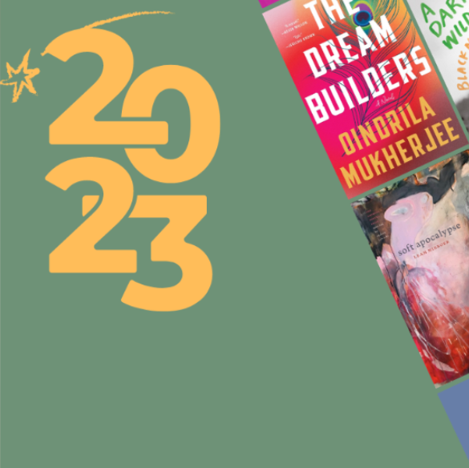

Best Nonvels I've read in 2023!!
Afnan Sulaiman
31 Dec 2023

2023 Reads
Every year, I recommend the best books out of the hundreds that have crossed my desk in
my work as book critic. These are the books I can’t stop thinking about months after
I’ve read them, the books I’ve pressed on my friends along with demands that they tell me all
their thoughts and especially let me know if they burst out laughing/burst into tears/threw
the book across the room at that one part.
In this batch: An action-packed allegory of the failures of America’s prison system. A
philosophical literary biography about the paradoxes of marriage. A surprising amount of
excellent historical fiction, a trend I’m choosing to blame on Hilary Mantel. Domestic novels
and satire and an extended tribute to Nabokov.
Let’s get into it. In no order but alphabetical, here are the 13 best books from the second half
of 2023.
Chain-Gang All-Stars by Nana Kwame Adjei-Brenyah
Chain-Gang All-Stars takes place in a near-future US where prisoners have the option of leaving
jail to fight
to the death in nationally televised gladiatorial games. If they live through three years on the
circuit, the
prisoners are free, sentence served. Almost no one ever lives that long.
Across three acts in this taut novel, Adjei-Brenyah kaleidoscopes into the minds of people at
all levels of complicity
and victimization from the Chain-Gang All-Stars fights. A white spectator goes from justifying
her fascination with the
games as cultural anthropology to rooting for the villains to get their throats cut. A prisoner
tortured in solitary confinement
opts for the circuit over another day at the mercy of his brutal guards. A board member working
for a private prison company strategizes
the best way to increase audience investment in the games. And two veteran fighters struggle to
find love and forgiveness within their
brutal, bloody world.
Glossing the text with periodic footnotes, Adjei-Brenyah makes it clear that the atrocities of
his world are only slightly removed from the
atrocities of our own. His most admirable characters declare that they are opposed not just to
the Chain-Gang All-Stars fights but to the
whole system: the games, the death penalty, and the prisons themselves. They dare us to ask
whether we can be so brave.
Loved and Missed by Susie Boyt
Loved and Missed, the seventh book by UK author Susie Boyt and her first to be published in the
US,
is a deceptively simple novel. On a first read through, this tale of a grandmother building a
life
with her granddaughter is so charming that you almost don’t notice how technically difficult the
book is.
It is hard to write a book that is warm without being sentimental. Yet Loved and Missed is full
of heart
but never saccharine; it is warm, and it shows you the effort and strain it takes to become so
warm.
Ruth, prone to sardonic observations yet also deeply earnest, is the narrator of this slight
book. She’s a
part-time schoolteacher and a single mother. At school she is a triumph — her students have been
known to
call her “Mum” — but her own daughter, Eleanor, ran away from home at 15. As the novel opens,
the pair are
partially estranged, and Eleanor is addicted to drugs. Ruth, desperate to care for someone who
will have to
love her back and certain that Eleanor is incapable of caring for anyone, more or less kidnaps
Eleanor’s daughter,
Lily, to come and live with her.
The domestic routine between Ruth and Lily fills this novel with its pleasing cozy rhythms. “It
was so civilized,” Ruth marvels,
recounting the ritual of their days. “The evenings settled on us gently and we read our books
side by side on the sofa, a saucer
of biscuits balanced on a cushion, until six, when we put the television on.” The pleasure of
this small-scale household bliss
is all the more intense because we know how hard-won it is, and how easily it can be disrupted.